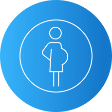
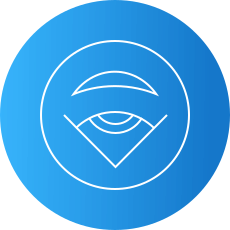
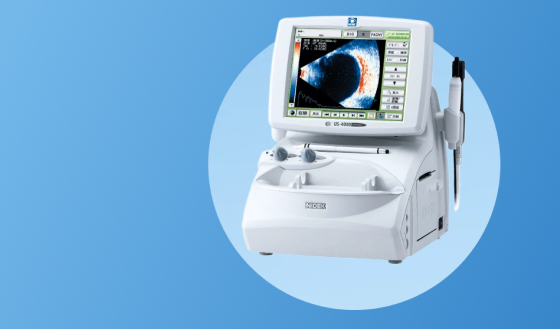

Комплексная диагностика зрения в зависимости от индивидуальных показаний может включать в себя исследования:
Визометрия
Рефрактометрия
Тонометрия
Периметрия
Оптическая когеррентная томография
Аберрометрия
Исследование цветового зрения
Гониоскопия
Биомикроскопия
Офтальмоскопия
Пупиллометрия
Ленсметрия (линзметрия)
Пахиметрия
Кератометрия
Биометрия
Кому требуется особое внимание и регулярная диагностика?
Старше 45 лет
Беременным женщинам
С отягощенной наследственностью
С высокими степенями близорукости
Страдающим сахарным диабетом
Пользователям контактных линз
Оборудование для диагностики в клинике «Эксимер»

Эхоскан US–4000 NIDEK
объединяет A–B скан, ультразвуковой пахиметр
Преимущества диагностики в клинике «Эксимер»
В нашей клинике прием ведут только высококвалифицированные специалисты, имеющие большой опыт проведения всех видов современных диагностических процедур.
Современное оборудование, имеющееся в арсенале врачей клиники «Эксимер», позволяет анализировать состояние зрительной системы с высочайшей точностью, что в случае обнаружения каких-либо отклонений в работе глаз крайне важно для постановки правильного диагноза и выбора эффективной методики лечения.
Все исследования проводятся в сжатые сроки.
Актуальные вопросы
Проведение и диагностического обследования, и лазерной коррекции зрения возможно в один день в том случае, если пациент проходит диагностику в первой половине дня.
Для того, чтобы получить выписку из своей медицинской карты с результатами проведенного обследования, Вам необходимо позвонить в клинику (в которой вы проходили обследование или лечение) и заказать ее у администратора клиники. Ваша выписка будет готова максимум в течение 3-х рабочих дней.
Диагностическое обследование зрения не только безопасно, но и необходимо беременным женщинам, поскольку гормональные изменения могут влиять и на зрительную систему. Врачи-офтальмологи рекомендуют проходить обследование беременным женщинам дважды: на 10 - 14-й неделе и ближе к концу, на 34 - 36-й неделе, даже если у вас всю жизнь было отличное зрение. Важно, чтобы во время диагностики врачом-офтальмологом исследовалась не только оптика глаза, но и состояние сетчатки. Дело в том, что главную угрозу состоянию глаз в период беременности и родов представляет ухудшение состояния сетчатки (дегенерация или дистрофические изменения). Они являются одной из самых частых причин невозможности естественных родов и рекомендации кесарева сечения.
Диагностические аппараты нового поколения, которые применяются для обследования детей в клинике «Эксимер», компьютеризированы. Это обеспечивает очень высокую точность получаемых данных.
Измерение рефракции во время проведения современной диагностики проходит при помощи авторефкератометра. При помощи IOL-master проводится измерение длины глазного яблока. Этот параметр позволяет уточнить причины многих рефракционных нарушений. Особое внимание уделяется проверке бинокулярных функций. Речь идет не только о таком нарушении зрения, как косоглазие, но и о бинокулярности (т.е. способности создавать «одну картинку» из тех, которые видит каждый глаз отдельно). Есть и более тонкие параметры: например, – глубина резкости. «Неправильная» работа зрительной системы снижает качество зрения. При нарушении тонких бинокулярных функций необходимо срочно проводить их восстановление. Современное обследование обязательно предполагает осмотр при расширенном зрачке. Для расширения зрачка применяются препараты нового поколения.
Приборы, применяющиеся в ходе детской диагностики в клинике «Эксимер», в большинстве своем устроены таким образом, чтобы результат диагностики не зависел от правильности выполнения ребенком каких-либо действий. Все диагностические мероприятия в «Эксимер» проводятся бесконтактными методами. Если в ходе диагностики врачи выявят проблемы со зрением, они назначат ребёнку необходимые лечебные процедуры и будут внимательно следить за состоянием его зрения.
Все врачи-офтальмологи настоятельно рекомендуют проходить обследование зрения регулярно. Дело в том, что причины падения зрения могут быть разными и человек долгое время может не подозревать о том, что у него наличествует глазное заболевание. А ведь без своевременного выявления многие заболевания зрительной системы могут привести к очень серьезному ухудшению зрения, а нередко, и к слепоте.
Отзывы о диагностике зрения
Анна М.
Огромная благодарность Екатерине Сергеевне за неравнодушие,
доброе и профессиональное отношение к пациенту
02.04.2025
Анна М.
Огромная благодарность Екатерине Сергеевне за неравнодушие,
доброе и профессиональное отношение к пациенту
02.04.2025
Анна М.
Огромная благодарность Екатерине Сергеевне за неравнодушие,
доброе и профессиональное отношение к пациенту
 Старше 45 лет
Старше 45 лет С отягощенной наследственностью
С отягощенной наследственностью Страдающим сахарным диабетом
Страдающим сахарным диабетом